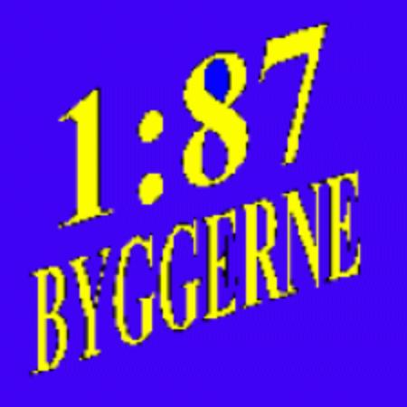
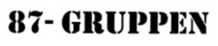
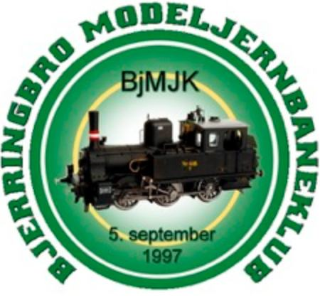
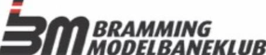
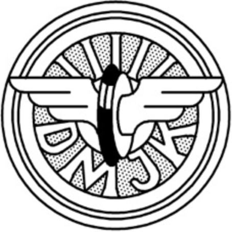
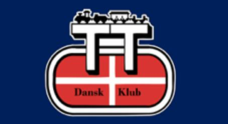
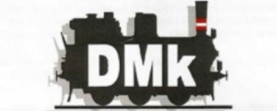

Klubdatabase
Forside
Velkommen
News
Klubdatabase
Udstilling
Bestyrelse
Klubdatabase
Søgetekst
Klubnavn
Klub
1:87 Byggerne
Landsdel
Vælg landsdel
Landsdel
Vestsjælland
Anlægstype
Vælg type
Anlæg
2- eller 3-skinne
Vælg
Anlægstype
Styring
Modulanlæg
Digital
Skala
Vælg skala
System
Areal
2-skinne
Nationalitet
Vælg
Skala
1:87 - HO
87-Gruppen
Storkøbenhavn
Bjerringbro
Modeljernbaneklub
Østjylland
Fast anlæg
Digital
3-skinne
1:87 - HO
Bramming
Modelbaneklub
Dansk Model-Jernbane
Klub DMJK
Storkøbenhavn
Dansk TT-klub
Sydjylland
Storkøbenhavn
Nørrebro anlæg
Roskilde anlæg
Modulanlæg
Sporvejsmodulanlæg
Tyske anlæg
Danske anlæg
Fast anlæg
Modulanlæg
Fast anlæg
Fast anlæg
Modulanlæg
Modulanlæg
Modulanlæg
Modulanlæg
Digital
Digital
Analog
Digital
Digital
Digital
Analog
Digital
3-skinne
3-skinne
3-skinne
2-skinne
2-skinne
2-skinne
85 m2
1 m2
2-skinne
2-skinne
72 m2
6 m2
1:87 - HO
1:87 - HO
1:45 - Spor 0
1:45 - Spor 0
1:45 - Spor 0
1:45 - Spor 0
TT
TT
Djurs Modelbaneklub
Østjylland
Fastanlæg
Modulanlæg
Analog
Analog
3-skinne
3-skinne
1:87 - HO
1:87 - HO
DMJU Børneområde
Hele landet
Log ind
Teknisk
DMJUs hjælpevogn
Beskrivelse af skala og skinnetyper
Morup og NEM normer
Modul normer og spor størrelse
Følg os
Youtube
Kom og Vær en del af
vores fællesskab!
Tilmeld dig vores nyhedsbrev idag
Din email
Din email
Tilmeld
| Klub | Landsdel | Anlæg | Anlægstype | Styring | System | Areal | Skala | Logo |
|---|---|---|---|---|---|---|---|---|
| 1:87 Byggerne | Vestsjælland | Modulanlæg | Digital | 2-skinne | 1:87 – H0 |  | ||
| 87-Gruppen | Storkøbenhavn |  | ||||||
| Bjerringbro Modeljernbaneklub | Østjylland | Fast anlæg | Digital | 3-skinne | 1:87 – H0 |  | ||
| Bramming Modelbaneklub | Sydjylland | Fast anlæg Modulanlæg | Digital | 3-skinne | 1:87 – H0 |  | ||
| Dansk Model-Jernbane Klub DMJK | Storkøbenhavn | Nørrebro anlæg Roskilde anlæg Modulanlæg Sporvejsmodulanlæg | Fast anlæg Modulanlæg | Analog Digital | 3-skinne 2-skinne | 85 m² 1 m² | 1:45 – Spor 0 |  |
| Dansk TT-klub | Storkøbenhavn | Tyske anlæg Danske anlæg | Modulanlæg | Analog Digital | 2-skinne | 72 m² 6 m² | TT |  |
| Djurs Modelbaneklub | Østjylland | Fast anlæg Modulanlæg | Analog | 3-skinne | 1:87 – H0 |  | ||
| DMJU Børneområde | Hele landet |